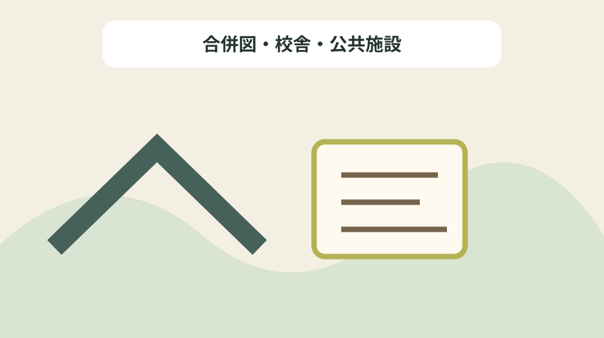
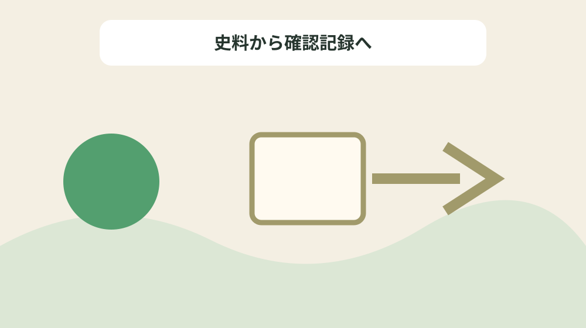

戦後の森町を合併・学校・公共施設の年代でたどる
結論：町村合併、学校、役場、文化施設の出来事を年代別に分けることで、資料の記載と現在の状態を混同しない戦後町域形成年表になります。
戦後町域形成年表で解く問い
森町公式資料には「もっとも1944年(昭和19年)12月7日昼過ぎの東南海地震による南部地域を中心とした家屋の倒壊などの被害は決して忘れ去ることのない戦時下の災害であった。」と記されています。戦後の森町を合併・学校・公共施設の年代でたどるでは、この記載を戦後町域形成年表の一行にし、町村合併、学校、役場、文化施設の出来事を年代別に分けるための根拠として扱います。資料名と確認日を先に書き、後から説明だけが独り歩きしないようにします。
同じページで確認できる「50年代後半から、1963年(昭和38年)に至る前後に森町は1町5か村による合併を遂げた。」は、前の事実と似ていても別の対象です。合併図・校舎・公共施設を読み解くときは、資料の掲載順ではなく、名称・年代・場所・根拠の対応を見ます。写真、家族の記憶、公的資料を三列に分け、食い違いを未確認として残します。
戦後町域形成年表では「農山村住民にとって比較的安心できるものであったと言ってよいであろう。」の確認欄と「町部地域への人口集中、山村部の人口流出と過疎化を引き起こし、南部地域は農業地帯として生産力の高さを誇ったが、一方ではベッドタウンとしての役割も果たしつつあった。」の照会欄を分けます。公式本文が述べていない現況や公開可否は未確認と書き、家族の記憶には話者と聞取日を添えます。旧記録を消さず、回答日と確認先を付けた新しい行を追加します。
公式本文から確定できる十二事実
森町公式資料には「1950年代に戦後復興を終えて、全国的な高度経済成長の段階に突入すると、エネルギー源が水力から石油へと大転換し、しかも家庭用燃料としても木炭などから灯油への転換が行われた。」と記されています。戦後の森町を合併・学校・公共施設の年代でたどるでは、この記載を戦後町域形成年表の一行にし、町村合併、学校、役場、文化施設の出来事を年代別に分けるための根拠として扱います。主語と対象を原文へ戻し、似た地名や人物を同じものとして扱いません。
同じページで確認できる「(2)現在の森町。三島神社の杜は「森」の語源となった山である。」は、前の事実と似ていても別の対象です。合併図・校舎・公共施設を読み解くときは、資料の掲載順ではなく、名称・年代・場所・根拠の対応を見ます。資料の利点は典拠へ戻れることにあり、現在の状態を保証するものではありません。
戦後町域形成年表では「50年代後半から、1963年(昭和38年)に至る前後に森町は1町5か村による合併を遂げた。」の確認欄と「(3)町村合併にかかわったみなさん。天方村・森町・飯田・園田・一宮は昭和30年、三倉と旧炭焼村は翌31年に森町となった。 (『森町むかしといま』より)」の照会欄を分けます。公式本文が述べていない現況や公開可否は未確認と書き、家族の記憶には話者と聞取日を添えます。不動産の道路、境界、登記、建物安全性は、この歴史資料とは別に調べます。
戦後町域形成年表の列を決める
森町公式資料には「町部地域への人口集中、山村部の人口流出と過疎化を引き起こし、南部地域は農業地帯として生産力の高さを誇ったが、一方ではベッドタウンとしての役割も果たしつつあった。」と記されています。戦後の森町を合併・学校・公共施設の年代でたどるでは、この記載を戦後町域形成年表の一行にし、町村合併、学校、役場、文化施設の出来事を年代別に分けるための根拠として扱います。年号の横へ出来事を示す動詞を残し、制作年と伝来年を一つにしません。
同じページで確認できる「1950年代に戦後復興を終えて、全国的な高度経済成長の段階に突入すると、エネルギー源が水力から石油へと大転換し、しかも家庭用燃料としても木炭などから灯油への転換が行われた。」は、前の事実と似ていても別の対象です。合併図・校舎・公共施設を読み解くときは、資料の掲載順ではなく、名称・年代・場所・根拠の対応を見ます。不足する情報を空欄の理由として残し、推測で表を完成させません。
戦後町域形成年表では「財政の逼迫(ひっぱく)、人口の過疎化、高齢化、進出企業の低迷と商工業の停滞、農林業の著しい後継者不足など、21世紀に向けて、山積した課題を積極的に打開する方策が、いま求められている。」の確認欄と「森町のような山村部の林業家をかかえる地域では、経済的に低迷を始めていった。」の照会欄を分けます。公式本文が述べていない現況や公開可否は未確認と書き、家族の記憶には話者と聞取日を添えます。まだ売ると決めていない段階でも、資料の所在と根拠を家族で共有できます。

年代の種類を動詞で分ける
森町公式資料には「(1)昭和28年の森町。「森町町勢要覧」に残された森山(三島山)付近の全景。 (森町役場商工観光課保管)」と記されています。戦後の森町を合併・学校・公共施設の年代でたどるでは、この記載を戦後町域形成年表の一行にし、町村合併、学校、役場、文化施設の出来事を年代別に分けるための根拠として扱います。所在地が示されても見学可能とは限らないため、公開条件を別に確認します。
同じページで確認できる「財政の逼迫(ひっぱく)、人口の過疎化、高齢化、進出企業の低迷と商工業の停滞、農林業の著しい後継者不足など、21世紀に向けて、山積した課題を積極的に打開する方策が、いま求められている。」は、前の事実と似ていても別の対象です。合併図・校舎・公共施設を読み解くときは、資料の掲載順ではなく、名称・年代・場所・根拠の対応を見ます。問い合わせは対象名、参照ページ、確認済みの事実、知りたい一点に絞ります。
戦後町域形成年表では「(3)町村合併にかかわったみなさん。天方村・森町・飯田・園田・一宮は昭和30年、三倉と旧炭焼村は翌31年に森町となった。 (『森町むかしといま』より)」の確認欄と「(1)昭和28年の森町。「森町町勢要覧」に残された森山(三島山)付近の全景。 (森町役場商工観光課保管)」の照会欄を分けます。公式本文が述べていない現況や公開可否は未確認と書き、家族の記憶には話者と聞取日を添えます。最初の一行から始め、十二事実を同時に確定しようとしないことが継続の要点です。
場所・所蔵・公開条件を混同しない
森町公式資料には「もっとも1944年(昭和19年)12月7日昼過ぎの東南海地震による南部地域を中心とした家屋の倒壊などの被害は決して忘れ去ることのない戦時下の災害であった。」と記されています。戦後の森町を合併・学校・公共施設の年代でたどるでは、この記載を戦後町域形成年表の一行にし、町村合併、学校、役場、文化施設の出来事を年代別に分けるための根拠として扱います。写真、家族の記憶、公的資料を三列に分け、食い違いを未確認として残します。
同じページで確認できる「1950年代は概して農地改革後の農村が一気にその生産力を上げて、農政もまた食糧自給に重点を置いた。」は、前の事実と似ていても別の対象です。合併図・校舎・公共施設を読み解くときは、資料の掲載順ではなく、名称・年代・場所・根拠の対応を見ます。旧記録を消さず、回答日と確認先を付けた新しい行を追加します。
戦後町域形成年表では「農山村住民にとって比較的安心できるものであったと言ってよいであろう。」の確認欄と「農山村住民にとって比較的安心できるものであったと言ってよいであろう。」の照会欄を分けます。公式本文が述べていない現況や公開可否は未確認と書き、家族の記憶には話者と聞取日を添えます。資料名と確認日を先に書き、後から説明だけが独り歩きしないようにします。
良い点
森町公式資料には「1950年代に戦後復興を終えて、全国的な高度経済成長の段階に突入すると、エネルギー源が水力から石油へと大転換し、しかも家庭用燃料としても木炭などから灯油への転換が行われた。」と記されています。戦後の森町を合併・学校・公共施設の年代でたどるでは、この記載を戦後町域形成年表の一行にし、町村合併、学校、役場、文化施設の出来事を年代別に分けるための根拠として扱います。資料の利点は典拠へ戻れることにあり、現在の状態を保証するものではありません。
同じページで確認できる「町部地域への人口集中、山村部の人口流出と過疎化を引き起こし、南部地域は農業地帯として生産力の高さを誇ったが、一方ではベッドタウンとしての役割も果たしつつあった。」は、前の事実と似ていても別の対象です。合併図・校舎・公共施設を読み解くときは、資料の掲載順ではなく、名称・年代・場所・根拠の対応を見ます。不動産の道路、境界、登記、建物安全性は、この歴史資料とは別に調べます。
戦後町域形成年表では「50年代後半から、1963年(昭和38年)に至る前後に森町は1町5か村による合併を遂げた。」の確認欄と「高度成長が第一次石油危機(1973年)でほぼ終わり、その後長期の低迷と1980年(昭和55年)代の一時的なバブル化を受けて、90年代のバブルの破錠と長期の停滞とは森町地域にも大きな負の遺産を残してきている。」の照会欄を分けます。公式本文が述べていない現況や公開可否は未確認と書き、家族の記憶には話者と聞取日を添えます。主語と対象を原文へ戻し、似た地名や人物を同じものとして扱いません。
注文したい点
森町公式資料には「町部地域への人口集中、山村部の人口流出と過疎化を引き起こし、南部地域は農業地帯として生産力の高さを誇ったが、一方ではベッドタウンとしての役割も果たしつつあった。」と記されています。戦後の森町を合併・学校・公共施設の年代でたどるでは、この記載を戦後町域形成年表の一行にし、町村合併、学校、役場、文化施設の出来事を年代別に分けるための根拠として扱います。不足する情報を空欄の理由として残し、推測で表を完成させません。
同じページで確認できる「(3)町村合併にかかわったみなさん。天方村・森町・飯田・園田・一宮は昭和30年、三倉と旧炭焼村は翌31年に森町となった。 (『森町むかしといま』より)」は、前の事実と似ていても別の対象です。合併図・校舎・公共施設を読み解くときは、資料の掲載順ではなく、名称・年代・場所・根拠の対応を見ます。まだ売ると決めていない段階でも、資料の所在と根拠を家族で共有できます。
戦後町域形成年表では「財政の逼迫(ひっぱく)、人口の過疎化、高齢化、進出企業の低迷と商工業の停滞、農林業の著しい後継者不足など、21世紀に向けて、山積した課題を積極的に打開する方策が、いま求められている。」の確認欄と「もっとも1944年(昭和19年)12月7日昼過ぎの東南海地震による南部地域を中心とした家屋の倒壊などの被害は決して忘れ去ることのない戦時下の災害であった。」の照会欄を分けます。公式本文が述べていない現況や公開可否は未確認と書き、家族の記憶には話者と聞取日を添えます。年号の横へ出来事を示す動詞を残し、制作年と伝来年を一つにしません。
対案・結論
森町公式資料には「(1)昭和28年の森町。「森町町勢要覧」に残された森山(三島山)付近の全景。 (森町役場商工観光課保管)」と記されています。戦後の森町を合併・学校・公共施設の年代でたどるでは、この記載を戦後町域形成年表の一行にし、町村合併、学校、役場、文化施設の出来事を年代別に分けるための根拠として扱います。問い合わせは対象名、参照ページ、確認済みの事実、知りたい一点に絞ります。
同じページで確認できる「森町のような山村部の林業家をかかえる地域では、経済的に低迷を始めていった。」は、前の事実と似ていても別の対象です。合併図・校舎・公共施設を読み解くときは、資料の掲載順ではなく、名称・年代・場所・根拠の対応を見ます。最初の一行から始め、十二事実を同時に確定しようとしないことが継続の要点です。
戦後町域形成年表では「(3)町村合併にかかわったみなさん。天方村・森町・飯田・園田・一宮は昭和30年、三倉と旧炭焼村は翌31年に森町となった。 (『森町むかしといま』より)」の確認欄と「50年代後半から、1963年(昭和38年)に至る前後に森町は1町5か村による合併を遂げた。」の照会欄を分けます。公式本文が述べていない現況や公開可否は未確認と書き、家族の記憶には話者と聞取日を添えます。所在地が示されても見学可能とは限らないため、公開条件を別に確認します。

家族に残す確認記録
森町公式資料には「もっとも1944年(昭和19年)12月7日昼過ぎの東南海地震による南部地域を中心とした家屋の倒壊などの被害は決して忘れ去ることのない戦時下の災害であった。」と記されています。戦後の森町を合併・学校・公共施設の年代でたどるでは、この記載を戦後町域形成年表の一行にし、町村合併、学校、役場、文化施設の出来事を年代別に分けるための根拠として扱います。旧記録を消さず、回答日と確認先を付けた新しい行を追加します。
同じページで確認できる「(1)昭和28年の森町。「森町町勢要覧」に残された森山(三島山)付近の全景。 (森町役場商工観光課保管)」は、前の事実と似ていても別の対象です。合併図・校舎・公共施設を読み解くときは、資料の掲載順ではなく、名称・年代・場所・根拠の対応を見ます。資料名と確認日を先に書き、後から説明だけが独り歩きしないようにします。
戦後町域形成年表では「農山村住民にとって比較的安心できるものであったと言ってよいであろう。」の確認欄と「(2)現在の森町。三島神社の杜は「森」の語源となった山である。」の照会欄を分けます。公式本文が述べていない現況や公開可否は未確認と書き、家族の記憶には話者と聞取日を添えます。写真、家族の記憶、公的資料を三列に分け、食い違いを未確認として残します。
現地確認と権利資料を分ける
森町公式資料には「1950年代に戦後復興を終えて、全国的な高度経済成長の段階に突入すると、エネルギー源が水力から石油へと大転換し、しかも家庭用燃料としても木炭などから灯油への転換が行われた。」と記されています。戦後の森町を合併・学校・公共施設の年代でたどるでは、この記載を戦後町域形成年表の一行にし、町村合併、学校、役場、文化施設の出来事を年代別に分けるための根拠として扱います。不動産の道路、境界、登記、建物安全性は、この歴史資料とは別に調べます。
同じページで確認できる「農山村住民にとって比較的安心できるものであったと言ってよいであろう。」は、前の事実と似ていても別の対象です。合併図・校舎・公共施設を読み解くときは、資料の掲載順ではなく、名称・年代・場所・根拠の対応を見ます。主語と対象を原文へ戻し、似た地名や人物を同じものとして扱いません。
戦後町域形成年表では「50年代後半から、1963年(昭和38年)に至る前後に森町は1町5か村による合併を遂げた。」の確認欄と「1950年代に戦後復興を終えて、全国的な高度経済成長の段階に突入すると、エネルギー源が水力から石油へと大転換し、しかも家庭用燃料としても木炭などから灯油への転換が行われた。」の照会欄を分けます。公式本文が述べていない現況や公開可否は未確認と書き、家族の記憶には話者と聞取日を添えます。資料の利点は典拠へ戻れることにあり、現在の状態を保証するものではありません。
大石の視点
森町公式資料には「町部地域への人口集中、山村部の人口流出と過疎化を引き起こし、南部地域は農業地帯として生産力の高さを誇ったが、一方ではベッドタウンとしての役割も果たしつつあった。」と記されています。戦後の森町を合併・学校・公共施設の年代でたどるでは、この記載を戦後町域形成年表の一行にし、町村合併、学校、役場、文化施設の出来事を年代別に分けるための根拠として扱います。まだ売ると決めていない段階でも、資料の所在と根拠を家族で共有できます。
同じページで確認できる「高度成長が第一次石油危機(1973年)でほぼ終わり、その後長期の低迷と1980年(昭和55年)代の一時的なバブル化を受けて、90年代のバブルの破錠と長期の停滞とは森町地域にも大きな負の遺産を残してきている。」は、前の事実と似ていても別の対象です。合併図・校舎・公共施設を読み解くときは、資料の掲載順ではなく、名称・年代・場所・根拠の対応を見ます。年号の横へ出来事を示す動詞を残し、制作年と伝来年を一つにしません。
戦後町域形成年表では「財政の逼迫(ひっぱく)、人口の過疎化、高齢化、進出企業の低迷と商工業の停滞、農林業の著しい後継者不足など、21世紀に向けて、山積した課題を積極的に打開する方策が、いま求められている。」の確認欄と「財政の逼迫(ひっぱく)、人口の過疎化、高齢化、進出企業の低迷と商工業の停滞、農林業の著しい後継者不足など、21世紀に向けて、山積した課題を積極的に打開する方策が、いま求められている。」の照会欄を分けます。公式本文が述べていない現況や公開可否は未確認と書き、家族の記憶には話者と聞取日を添えます。不足する情報を空欄の理由として残し、推測で表を完成させません。
まとめ
森町公式資料には「(1)昭和28年の森町。「森町町勢要覧」に残された森山(三島山)付近の全景。 (森町役場商工観光課保管)」と記されています。戦後の森町を合併・学校・公共施設の年代でたどるでは、この記載を戦後町域形成年表の一行にし、町村合併、学校、役場、文化施設の出来事を年代別に分けるための根拠として扱います。最初の一行から始め、十二事実を同時に確定しようとしないことが継続の要点です。
同じページで確認できる「もっとも1944年(昭和19年)12月7日昼過ぎの東南海地震による南部地域を中心とした家屋の倒壊などの被害は決して忘れ去ることのない戦時下の災害であった。」は、前の事実と似ていても別の対象です。合併図・校舎・公共施設を読み解くときは、資料の掲載順ではなく、名称・年代・場所・根拠の対応を見ます。所在地が示されても見学可能とは限らないため、公開条件を別に確認します。
戦後町域形成年表では「(3)町村合併にかかわったみなさん。天方村・森町・飯田・園田・一宮は昭和30年、三倉と旧炭焼村は翌31年に森町となった。 (『森町むかしといま』より)」の確認欄と「1950年代は概して農地改革後の農村が一気にその生産力を上げて、農政もまた食糧自給に重点を置いた。」の照会欄を分けます。公式本文が述べていない現況や公開可否は未確認と書き、家族の記憶には話者と聞取日を添えます。問い合わせは対象名、参照ページ、確認済みの事実、知りたい一点に絞ります。
よくある質問
戦後町域形成年表で最初に書く項目は何ですか。
資料名、対象名、確認日、根拠の種類です。町村合併、学校、役場、文化施設の出来事を年代別に分けるため、現況と家族の記憶は別欄にします。
戦後町域形成年表に所在地があれば現地を見学できますか。
掲載だけでは判断できません。もっとも1944年(昭和19年)12月7日昼過ぎの東南海地震による南部地域を中心とした家屋の倒壊などの被害は決して忘れ去ることのない戦時下の災害であった。という記録は合併図・校舎・公共施設を読む根拠ですが、現在の公開日時や立入り条件の根拠ではありません。対象ごとに管理者の案内を確認します。
戦後町域形成年表で年代が複数ある場合はどれを採用しますか。
農山村住民にとって比較的安心できるものであったと言ってよいであろう。という記録を起点に、合併図・校舎・公共施設の制作、記録、移転、発見などの動作を分けます。異なる出来事の年は統合せず、それぞれの典拠を同じ行に残します。
家族の記憶は戦後町域形成年表の公式事実と一緒に書けますか。
1950年代に戦後復興を終えて、全国的な高度経済成長の段階に突入すると、エネルギー源が水力から石油へと大転換し、しかも家庭用燃料としても木炭などから灯油への転換が行われた。という公的記載とは別欄にします。合併図・校舎・公共施設について話した人、聞取日、確信度を書けば、家族の記憶を残しつつ公的資料へ上書きせず比較できます。
公式情報源
最終確認日：2026-08-18 ／ 公表事実と執筆者の解釈・意見を分けて記載しています。